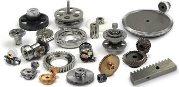
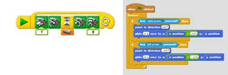
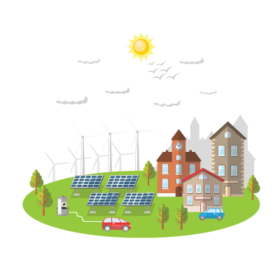
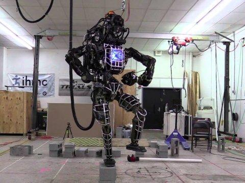
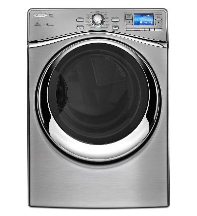
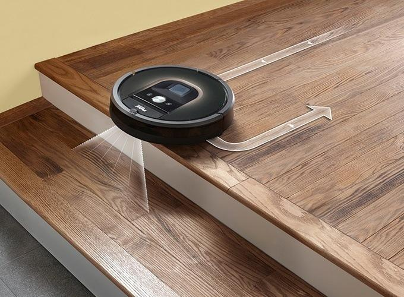

A robot is a type of machine, but not all machines are robots. In fact, robots can be thought of as a special kind of automatic machine.
All machines, including robots, are made up of mechanical parts. However, only some machines and ALL robots also use electricity to function.
Like automatic machines, robots are also programmed to do their jobs automatically, but they are even more advanced because they have a controller, which is programmed by software, and sensors to adjust to new situations. With more advanced robots, you do not even have to adjust settings for these changes to take place.
A robot is a machine that has…
Select each item to learn more.
Mechanical parts are the physical pieces that make up the machine. Examples: motors, wheels, and gears.

Software programs are instructions written in code, which tell a computer or machine how to do its job. They are the like the machine’s 'thoughts'.
 An energy source supplies energy to the machine that does the work. If you use a bat to hit a ball, YOU are the energy source that helps the bat (machine) move the ball (load).
A sensor recognizes light, temperature, movement, or another signal. A sensor controls the robot’s reaction.
A controller is like the 'brain' of the robot. The software program is like the 'thoughts' in the brain that tell the robot what to do.
A robot can look human-like but does not have to.
What makes a machine a robot is that it has sensors to gather information, and then uses that information to figure out what to do.
Robots do not actually make “decisions” or “think”. Their software programming tells them what to do in different situations. However, a really advanced robot with complex software can seem like it is making decisions, which makes it seem human-like.
Select each tab to learn more.
This robot roams around the planet Mars. It uses sensors to study the land in search for evidence of water. It needs to constantly adapt to different planetary surfaces and conditions.
Atlas is a humanoid robot, which means it is designed to look and act human-like. It can balance, vacuum, and walk outside in unfamiliar environments.

Did you know that you or someone you know may have a robot?
Think about what makes a machine a robot, and see if there is anything in your home, school, or neighborhood that could be considered a robot.
Click on the machines below. Which could be considered robots?
This dryer has temperature and moisture sensors. It stops when clothes are dry, even if you set the dryer for a longer cycle.

Siri is a program that gives the iPhone the ability to talk with and help you. You can ask Siri anything, and the program will interpret your words and then respond with a solution or information. Siri can do online research, put an appointment into your phone calendar, give you reminders, and more.
Roomba is a vacuum cleaner that can vacuum on its own. It has sensors to identify stairs and objects so it can move around them and clean the whole floor. It can also find its charging station when it needs to recharge.
